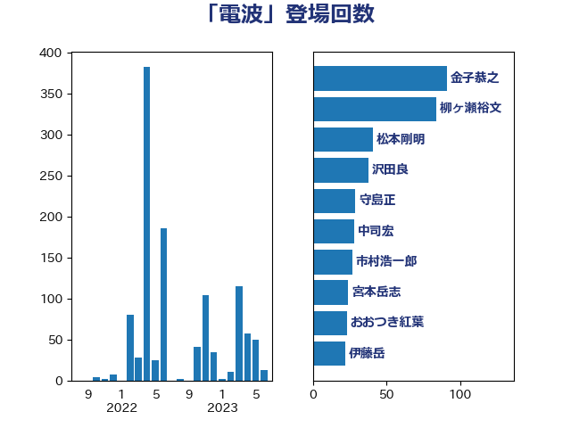

単語「電波」

| 金子恭之 | 自由民主党 | 91 回 |
| 柳ヶ瀬裕文 | 日本維新の会 | 84 回 |
| 松本剛明 | 自由民主党 | 41 回 |
| 沢田良 | 日本維新の会 | 38 回 |
| 守島正 | 日本維新の会 | 29 回 |
| 中司宏 | 日本維新の会 | 28 回 |
| 市村浩一郎 | 日本維新の会 | 27 回 |
| 宮本岳志 | 日本共産党 | 24 回 |
| おおつき紅葉 | 立憲民主党 | 23 回 |
| 伊藤岳 | 日本共産党 | 22 回 |
| 鈴木庸介 | 立憲民主党 | 21 回 |
| 輿水恵一 | 公明党 | 21 回 |
| 小沢雅仁 | 立憲民主党 | 19 回 |
| 小森卓郎 | 自由民主党 | 19 回 |
| 浜田聡 | NHK党 | 17 回 |
| 赤羽一嘉 | 公明党 | 15 回 |
| 道下大樹 | 立憲民主党 | 14 回 |
| 若松謙維 | 公明党 | 14 回 |
| 浮島智子 | 公明党 | 14 回 |
| 岸田文雄 | 自由民主党 | 14 回 |
| 松下新平 | 自由民主党 | 13 回 |
| 和田有一朗 | 日本維新の会 | 13 回 |
| 岡本あき子 | 立憲民主党 | 10 回 |
| 山口俊一 | 自由民主党 | 10 回 |
| 寺田稔 | 自由民主党 | 10 回 |
| 美延映夫 | 日本維新の会 | 9 回 |
| 小西洋之 | 立憲民主党 | 9 回 |
| 奥野総一郎 | 立憲民主党 | 9 回 |
| 大島敦 | 立憲民主党 | 9 回 |
| 古賀之士 | 立憲民主党 | 7 回 |
| 佐々木紀 | 自由民主党 | 7 回 |
| 細田博之 | 自由民主党 | 6 回 |
| 杉田水脈 | 自由民主党 | 6 回 |
| 馬場伸幸 | 日本維新の会 | 5 回 |
| 阿部弘樹 | 日本維新の会 | 5 回 |
| 金城泰邦 | 公明党 | 5 回 |
| 西岡秀子 | 国民民主党 | 5 回 |
| 片山大介 | 日本維新の会 | 5 回 |
| 奥下剛光 | 日本維新の会 | 5 回 |
| 和田政宗 | 自由民主党 | 5 回 |
| 音喜多駿 | 日本維新の会 | 4 回 |
| 鈴木敦 | 国民民主党 | 4 回 |
| 田村智子 | 日本共産党 | 4 回 |
| 足立康史 | 日本維新の会 | 3 回 |
| 赤嶺政賢 | 日本共産党 | 3 回 |
| 白石洋一 | 立憲民主党 | 3 回 |
| 片山さつき | 自由民主党 | 3 回 |
| 浅田均 | 日本維新の会 | 3 回 |
| 森山浩行 | 立憲民主党 | 3 回 |
| 大野敬太郎 | 自由民主党 | 3 回 |
| 井坂信彦 | 立憲民主党 | 3 回 |
| 黄川田仁志 | 自由民主党 | 2 回 |
| 高良鉄美 | 無所属 | 2 回 |
| 鈴木義弘 | 国民民主党 | 2 回 |
| 芳賀道也 | 国民民主党 | 2 回 |
| 笠井亮 | 日本共産党 | 2 回 |
| 福岡資麿 | 自由民主党 | 2 回 |
| 福山哲郎 | 立憲民主党 | 2 回 |
| 神津たけし | 立憲民主党 | 2 回 |
| 石井準一 | 自由民主党 | 2 回 |
| 渡辺周 | 立憲民主党 | 2 回 |
| 河野義博 | 公明党 | 2 回 |
| 橋本岳 | 自由民主党 | 2 回 |
| 柘植芳文 | 自由民主党 | 2 回 |
| 林芳正 | 自由民主党 | 2 回 |
| 山東昭子 | 自由民主党 | 2 回 |
| 尾辻秀久 | 無所属 | 2 回 |
| 吉田宣弘 | 公明党 | 2 回 |
| 伊東信久 | 日本維新の会 | 2 回 |
| 井林辰憲 | 自由民主党 | 2 回 |
| 齊藤健一郎 | 無所属 | 1 回 |
| 鬼木誠 | 立憲民主党 | 1 回 |
| 高橋千鶴子 | 日本共産党 | 1 回 |
| 高木啓 | 自由民主党 | 1 回 |
| 高市早苗 | 自由民主党 | 1 回 |
| 藤巻健太 | 日本維新の会 | 1 回 |
| 藤井比早之 | 自由民主党 | 1 回 |
| 羽田次郎 | 立憲民主党 | 1 回 |
| 紙智子 | 日本共産党 | 1 回 |
| 竹詰仁 | 国民民主党 | 1 回 |
| 福島伸享 | 無所属 | 1 回 |
| 神谷裕 | 立憲民主党 | 1 回 |
| 神谷宗幣 | 参政党 | 1 回 |
| 石川香織 | 立憲民主党 | 1 回 |
| 田畑裕明 | 自由民主党 | 1 回 |
| 猪瀬直樹 | 日本維新の会 | 1 回 |
| 猪口邦子 | 自由民主党 | 1 回 |
| 湯原俊二 | 立憲民主党 | 1 回 |
| 清水貴之 | 日本維新の会 | 1 回 |
| 浜地雅一 | 公明党 | 1 回 |
| 浜口誠 | 国民民主党 | 1 回 |
| 河野太郎 | 自由民主党 | 1 回 |
| 江藤拓 | 自由民主党 | 1 回 |
| 梅谷守 | 立憲民主党 | 1 回 |
| 末松信介 | 自由民主党 | 1 回 |
| 木村次郎 | 自由民主党 | 1 回 |
| 木原稔 | 自由民主党 | 1 回 |
| 山添拓 | 日本共産党 | 1 回 |
| 山崎誠 | 立憲民主党 | 1 回 |
| 山岡達丸 | 立憲民主党 | 1 回 |
| 安江伸夫 | 公明党 | 1 回 |
| 堀場幸子 | 日本維新の会 | 1 回 |
| 城井崇 | 立憲民主党 | 1 回 |
| 佐藤正久 | 自由民主党 | 1 回 |
| 伊藤忠彦 | 自由民主党 | 1 回 |
| 井野俊郎 | 自由民主党 | 1 回 |
| 五十嵐清 | 自由民主党 | 1 回 |
| 中川宏昌 | 公明党 | 1 回 |